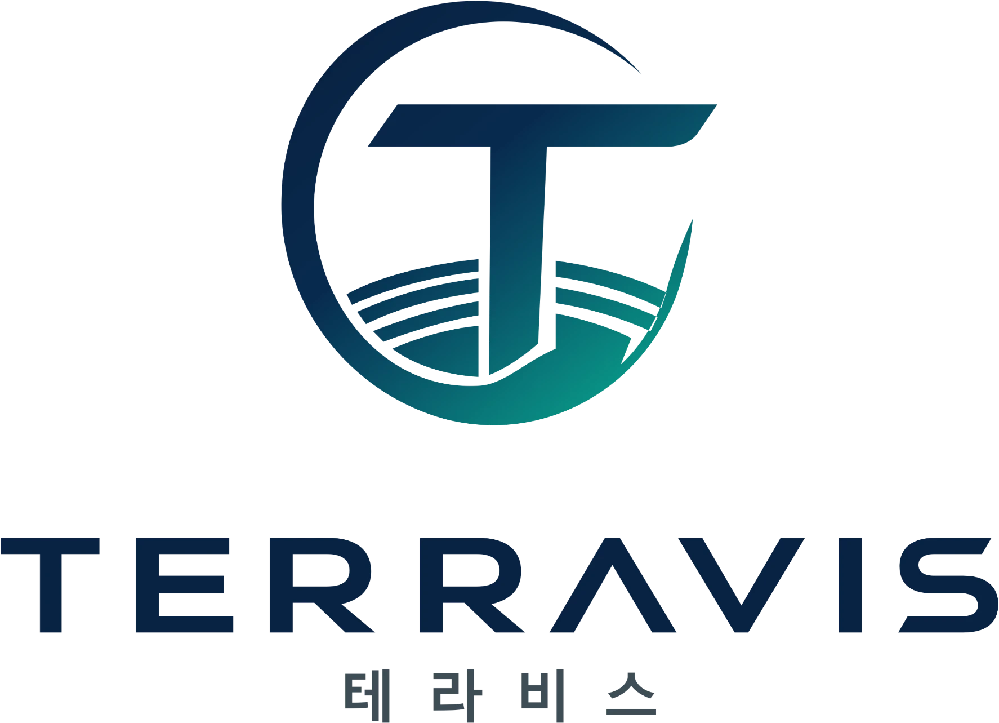

CEO Message
황유리
대표이사
인사말 예시 문안
개발과 보전이 서로를 설득할 수 있도록,
개발과 보전이 서로를 설득할 수 있도록,
정확한 조사와 성실한 평가로 답하겠습니다.
안녕하십니까. 주식회사 테라비스 홈페이지를 찾아주셔서 감사합니다.
환경영향평가는 사업을 늦추는 절차가 아니라, 사업이 지역과 오래 함께할 수 있는지 확인하는 과정이라고 생각합니다. 그래서 테라비스는 현장을 직접 조사한 연구원이 평가서를 쓰고, 협의가 끝날 때까지 책임지는 원칙으로 일합니다.
전북 완주의 본사와 경기 안양사무소, 두 거점에서 사업자와 가까이 소통하며 신뢰할 수 있는 평가로 보답하겠습니다. 앞으로도 많은 관심과 성원 부탁드립니다.
주식회사 테라비스 대표이사 황유리
Core Values
테라비스가 일하는 방식
Accuracy정확성직접 조사한 자료로 예측하고 평가합니다. 숫자 하나에도 근거를 남깁니다.
Responsibility책임감평가서 제출이 아니라 협의 완료를 기준으로 일정을 관리합니다.
Communication소통사업자, 주민, 협의기관 사이에서 근거를 바탕으로 설명합니다.
Overview
회사개요
| 회사명 | 주식회사 테라비스 (TERRAVIS Co., Ltd.) |
|---|---|
| 대표이사 | 황유리 |
| 업종 | 제1종 환경영향평가업 |
| 등록번호 | 제 ○○○○-○○호 |
| 설립일 | 20○○년 ○○월 ○○일 |
| 본사 | 전북특별자치도 완주군 삼례읍 삼례로 443, 706호 (우석대학교 본관 7층) |
| 안양사무소 | 경기도 안양시 만안구 덕천로 152번길 25 아이에스비즈타워센트럴 제20층 B동 2010A호 |
| 이메일 | terravis2026@naver.com |
| 홈페이지 | www.terravis.co.kr |
History
연혁 날짜 확인 필요
실제 날짜로 바꿔 넣을 자리입니다.
- 주식회사 테라비스 법인 설립
- 제1종 환경영향평가업 등록
- 본사 이전 (전북특별자치도 완주군, 우석대학교 본관)
- 안양사무소 개소 (경기도 안양시)
Organization
조직 예시
실제 조직 구성에 맞춰 바꿔 넣을 자리입니다.
대표이사
평가사업부
환경영향평가팀소규모·사후조사팀조사분석부
생태조사팀측정분석팀경영지원부
경영지원팀안양사무소Corporate Identity
CI 소개

- 원과 곡선
- 지구와 땅을 감싸는 원은 넓은 시야로 환경을 바라보는 통찰을 뜻합니다.
- T와 밭고랑
- 테라비스의 머리글자 T가 땅에 뿌리내리고, 그 아래 곡선은 우리가 조사하고 지켜야 할 대지를 나타냅니다.
- 남색에서 청록으로
- 신뢰를 뜻하는 남색이 자연과 물을 뜻하는 청록으로 이어지며, 개발과 보전의 조화를 표현합니다.
Navy #0B2545
Deep #064B60
Teal #008D84
Aqua #41C3C7
로고 의미 설명은 디자인을 바탕으로 쓴 예시 문안입니다.
Location
오시는 길
사업 위치와 규모를 알려주시면
평가 대상 여부부터 검토해 드립니다.
E. terravis2026@naver.com